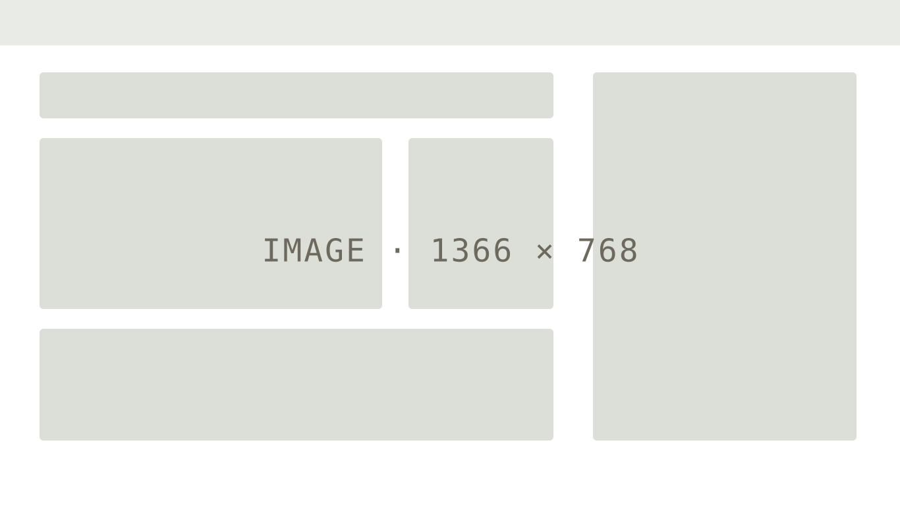
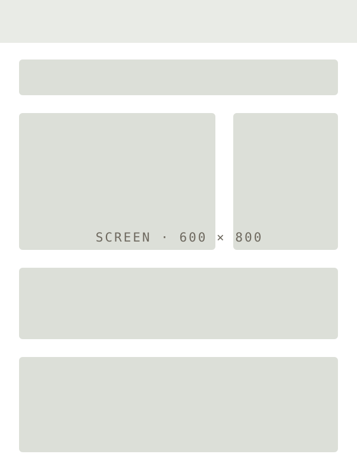

01PrincipiosPrinciples
Cinco ideas que el sistema no negocia.
Five ideas the system never trades away.
Claro, con grano de papel
Light, with a paper grain
El fondo es un hueso frío con un ruido fino, como papel impreso. La tinta como fondo se reserva para las portadas, y cada portada cierra con un filete de resaltador de 3px que la separa del contenido.
The background is a cool off-white with a fine grain, like printed paper. Ink as a background is kept for covers, and every cover closes with a 3px highlighter rule that separates it from the content.
Letras que se leen desde lejos
Letters you can read from afar
Títulos y texto de una misma familia pensada para pantalla, con aperturas abiertas y seguimiento positivo. Nada por debajo de 13px.
Titles and text from one family made for screens, with open apertures and positive tracking. Nothing below 13px.
El contenido no va en cajas
Content does not sit in boxes
Las secciones son capítulos numerados sobre un filete negro: etiqueta mono, cifra o titular grande y un filete fino. Las pantallas se separan del papel con un borde de 1px; los pies de figura son texto.
Sections are numbered chapters on a black rule: mono label, large figure or headline and a hairline. Screens separate from the paper with a 1px border; figure captions are text.
Lo que se toca, parece tocable
What you can press looks pressable
Los controles que eligen contenido llevan filete de 2px y sombra desplazada de tinta; al elegirlos se hunden y pasan a tinta. Ninguna superficie de contenido usa esa sombra.
Controls that choose content carry a 2px rule and an offset ink shadow; when chosen they sink and turn to ink. No content surface uses that shadow.
Una sola fuente de verdad
A single source of truth
Todo sale de los tokens de :root. Un componente consume colores, tamaños, radios y tiempos; no los inventa.
Everything comes from the :root tokens. A component consumes colors, sizes, radii and timings; it does not invent them.
02ColorColor
Un resaltador sobre hueso frío, y tinta azul para anotar.
A highlighter on cool off-white, and blue ink to annotate.
Regla del resaltador: se usa una sola vez por proyecto, en la idea que debe recordarse. Marca la frase y el numeral de ese capítulo; en el resto, el numeral va en tinta.
Highlighter rule: it is used only once per project, on the idea to remember. It marks that chapter's phrase and numeral; elsewhere the numeral stays in ink.
Regla de las portadas: la cabecera de cada caso va en tinta con texto claro y cierra con un filete de resaltador de 3px que la separa de las pestañas.
Cover rule: each case header is ink with light text and closes with a 3px highlighter rule that separates it from the tabs.
Superficie y textoSurface and text Acento y semánticaAccent and semantics Contraste medido, en vivoMeasured contrast, live| Texto | Text | bg-0 | bg-1 | bg-2 | bg-3 |
|---|
Se calcula en esta página con la fórmula WCAG a partir de los tokens. AA exige 4,5:1 en texto normal; el texto terciario no se usa sobre bg-3.
Computed on this page with the WCAG formula from the tokens. AA requires 4.5:1 for normal text; tertiary text is not used on bg-3.
03TipografíaTypography
Tres voces: una que titula, una que explica y una que mide.
Three voices: one that titles, one that explains and one that measures.
Radio Canada Big
Humanista, de ritmo propio y letras abiertas.
Humanist, with its own rhythm and open letters.
Radio Canada
La hermana de los títulos, hecha para leer. Un solo origen tipográfico: el ritmo de los títulos y el del cuerpo coinciden.
The titles' sibling, made for reading. A single typographic origin: the rhythm of titles and body match.
Hyperlegible Mono
Diseñada para que 0 y O, 1 e l no se confundan. Siempre en mayúsculas y con +0,06em para etiquetas y cifras.
Designed so 0 and O, 1 and l are never confused. Always uppercase with +0.06em for labels and figures.
04Espacio, forma y movimientoSpace, shape and motion
Una base de 4 píxeles, 6 radios y 3 tiempos.
A 4-pixel base, 6 radii and 3 durations.
EspacioSpace RadiosRadii Movimiento y ruidoMotion and grain0,15 s para cambios de estado en controles, 0,3 s para aparecer y moverse y 0,5 s para desplazar imágenes y paneles. Todo se detiene con «reducir movimiento». El grano de papel es un solo token, --grain-opacity, y está fijo en 0,07.
0.15 s for state changes in controls, 0.3 s for appearing and moving and 0.5 s for moving images and panels. Everything stops under "reduce motion". The paper grain is a single token, --grain-opacity, fixed at 0.07.
05ComponentesComponents
Cada pieza existe una sola vez y se reutiliza en todo el sitio.
Each piece exists only once and is reused across the site.
EtiquetaTag.badge · .kt · .chip — una sola familia: mono, 13px, mayúsculas. Sirve para clasificar, nunca para accionar. La pill .badge lleva un punto y tiene tres variantes: .acid (resaltador), .inv (clara sobre tinta) y .line (clara con filete sobre papel); puede unir dos datos con «·». En las etiquetas el color solo significa algo: verde es hecho, azul es observación, ocre es hipótesis.
.badge · .kt · .chip — one family: mono, 13px, uppercase. It classifies, it never acts. The .badge pill carries a dot and has three variants: .acid (highlighter), .inv (light on ink) and .line (light with a hairline on paper); it can join two data points with «·». On tags color only ever means something: green is fact, blue is observation, ochre is hypothesis.
.seg — alterna entre vistas cortas del mismo contenido. La opción elegida se invierte: tinta de fondo, texto claro. El selector de idioma es un control segmentado. Pruébalo.
.seg — switches between short views of the same content. The chosen option inverts: ink fill, light text. The language switch is a segmented control. Try it.
.tabs · .tab — divide una página en partes grandes. Partes: número en mono y nombre. La activa va en tinta con el número en resaltador; van centradas sobre un filete fino.
.tabs · .tab — splits a page into large parts. Parts: a mono number and a name. The active tab is ink with the number in highlighter; tabs sit centered over a hairline.
Prompt
.persona-pick · .pbtn — elige qué contenido se muestra cuando las opciones merecen protagonismo. Partes: indicación con punto amarillo, avatar, título, etiqueta y flecha. Estados: en reposo (filete de 2px, sombra desplazada y flecha), al señalar (se levanta) y elegido (se hunde en tinta con el avatar en resaltador; el color basta para marcarlo, sin texto de estado).
.persona-pick · .pbtn — chooses which content is shown when the options deserve prominence. Parts: a prompt with a yellow dot, avatar, title, label and arrow. States: at rest (2px rule, offset shadow and arrow), on hover (it lifts) and chosen (it sinks into ink with a highlighter avatar; color alone marks it, no state text).
.choice — opciones dentro de un contenido, un nivel por debajo del selector de opciones. Píldora con filete; la elegida pasa a tinta con ✓. 40px de alto para el dedo.
.choice — options inside a piece of content, one level below the option selector. A pill with a hairline; the chosen one turns ink with a ✓. 40px tall for touch.
.btn — la acción principal de una pantalla; uno por pantalla. Tinta sólida, texto claro y ancho de su contenido. Variantes: con flecha (avanzar) y con icono (descargar). Al señalar pasa a resaltador y la flecha avanza o el icono baja.
.btn — the main action of a screen; one per screen. Solid ink, light text, sized to its content. Variants: with an arrow (move on) and with an icon (download). On hover it turns highlighter and the arrow moves forward or the icon drops.
Value
Value
Value
Statement
Statement
.ed-item · .ed-big · .ed-flow — cifras y recorridos sin tarjeta: etiqueta mono, valor grande y un filete de 1px. Sin fondo, sin borde de caja, sin sombra.
.ed-item · .ed-big · .ed-flow — figures and journeys without a card: mono label, a large value and a 1px rule. No fill, no box border, no shadow.
.pend — marca un dato que todavía no existe. Se muestra, no se esconde ni se inventa.
.pend — marks data that does not exist yet. It is shown, never hidden or invented.

.shot — una pantalla sobre el papel: borde de 1px, sin marco ni sombra. El pie es texto corrido y numera cada figura (Fig. 1, Fig. 2…). Clic para ampliar.
.shot — a screen on the paper: 1px border, no frame, no shadow. The caption is running text and numbers each figure (Fig. 1, Fig. 2…). Click to enlarge.
.ad-box — abre una pantalla para explicarla. La tinta azul informa; el resaltador marca lo que cambió. El número va en un cuadro amarillo, como la numeración de un esquema.
.ad-box — opens a screen to explain it. Blue ink informs; the highlighter marks what changed. The number sits in a yellow square, like the numbering of a diagram.
Title
- Label
- Value
.hero en tinta — abre una página de contenido. Partes: badge invertido, titular con un filete claro de 3px debajo, ficha de etiqueta y valor con filetes al 35 % y el filete de resaltador de 3px al cierre.
.hero in ink — opens a content page. Parts: an inverted badge, a headline with a 3px light rule below, a label-and-value sheet with 35% rules and the 3px highlighter rule at the close.
.sello — disco con etiqueta y número que cuelga de la esquina de una imagen. Tamaños: 92px por defecto, 64px sobre una portada en tinta (en resaltador) y 44px en miniaturas, sin etiqueta.
.sello — a disc with a label and a number that hangs from an image corner. Sizes: 92px by default, 64px on an ink cover (in highlighter) and 44px on thumbnails, without a label.

TitlePill · Label.cover.cs — lleva a una página de contenido. Partes: imagen a escala sobre un panel de tinta, metadatos en mono, título con flecha y pill. Al señalar, la imagen sube, el título se subraya en resaltador y la flecha avanza. Se usan en rejilla y todas del mismo tamaño.
.cover.cs — leads to a content page. Parts: an image at scale on an ink panel, mono metadata, a title with an arrow and a pill. On hover the image rises, the title gets a highlighter underline and the arrow moves. Used in a grid, all the same size.
Doce columnas: rótulo en 1–3 y contenido en 4–12, con el texto a 62 caracteres como máximo. Cada capítulo va sobre un filete negro de 2px. En móvil (≤860px) pasa a una sola columna. La tecla G dibuja la rejilla encima.
Twelve columns: label in 1–3 and content in 4–12, with text capped at 62 characters. Each chapter sits on a 2px black rule. On mobile (≤860px) it collapses to one column. The G key draws the grid on top.
Línea de tiempoTimeline- TitleDescription
- TitleDescription
06Dónde se usaWhere it is used
Si un componente existe, se usa en todas partes.
If a component exists, it is used everywhere.
| Componente | Component | Páginas | Pages | Unificó | Unified |
|---|---|---|---|---|---|
| Hero | 6 / 7 | 2 variantes en 1; titular de una sola palabra; en los casos, en tinta2 variants into 1; one-word headline; in ink on the cases | |||
| Etiqueta | Tag | 6 / 7 | 5 clases en 1 familia5 classes into 1 family | ||
| Control segmentado | Segmented control | 7 / 7 | 7 controles en 17 controls into 1 | ||
| Pestañas de página | Page tabs | 5 / 7 | Las de los casos pasan a la portadaThe case tabs reach the home page | ||
| Selector de opciones | Option selector | 2 / 7 | Nuevo; + Facturación, montado con JSNew; + Billing, mounted with JS | ||
| Botón de acción | Action button | 5 / 7 | NuevoNew | ||
| Composición tipográfica | Typographic composition | 5 / 7 | Retira la tarjeta: 14 superficiesRetires the card: 14 surfaces | ||
| Figura y pie | Figure and caption | 5 / 7 | Retira el marco con sombra y la barra de títuloRetires the shadowed frame and the title bar | ||
| Anotación | Annotation | 2 / 7 | 4 cajas en 14 boxes into 1 | ||
| Sello de caso | Case seal | 6 / 7 | NuevoNew | ||
| Rejilla de 12 columnas | 12-column grid | 6 / 7 | NuevoNew |